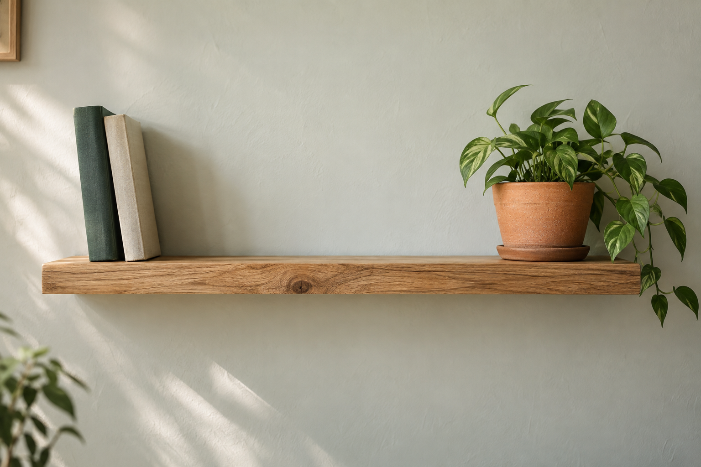

ДЛЯ МАСТЕРСКОЙ. ДЛЯ ДОМА. ДЛЯ ДЕЛА.
Хороший инструмент.
Есть толк.
От первой полки до большой стройки.
Всё, что нужно, чтобы сделать самому.
01 — 06Вещи, которые работают.
01 /Для любых задачОт мелкого ремонта до мастерской
02 /Ничего лишнегоХарактеристики и цены на виду
03 /Соберите свой наборПопробуйте удобную корзину
ПОДБЕРЁМ ПОД ВАШУ ЗАДАЧУ
Арсенал мастера / 06
Такого инструмента пока нет
Попробуйте другое название или выберите все категории.
НАЧНИТЕ С МАЛОГО
Большие идеи
начинаются с полки.
Надёжный инструмент, немного времени —
и дома появляется что-то, сделанное вами.

БЕЗ ЛИШНИХ ВОПРОСОВ
Всё для
начала работы.
Как работает этот магазин? +
Это демонстрационный сайт. Можно найти инструмент, открыть характеристики и собрать корзину. Реальные заказы и оплата не оформляются.
Доставка и самовывоз +
На реальном сайте здесь будут города доставки, сроки, стоимость и адрес пункта выдачи. В этом примере доставка не производится.
Комплектация и гарантия +
В карточках приведены демонстрационные характеристики. Условия гарантии и комплектацию продавец добавит при запуске своего магазина.